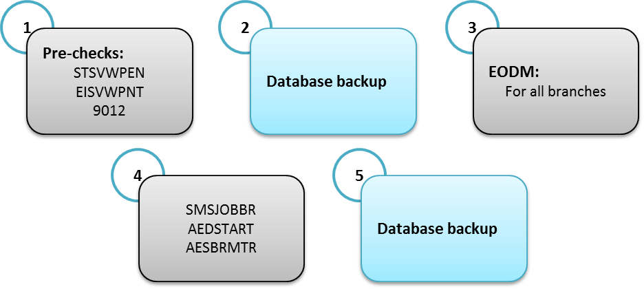
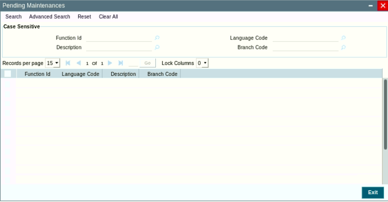
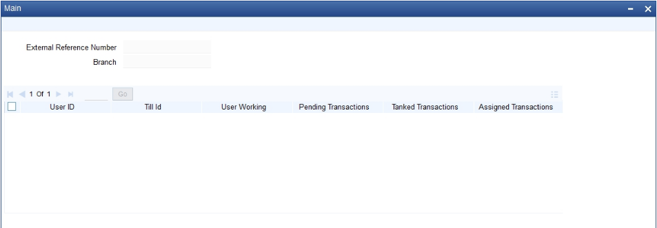
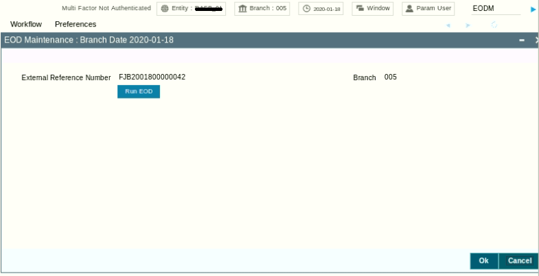
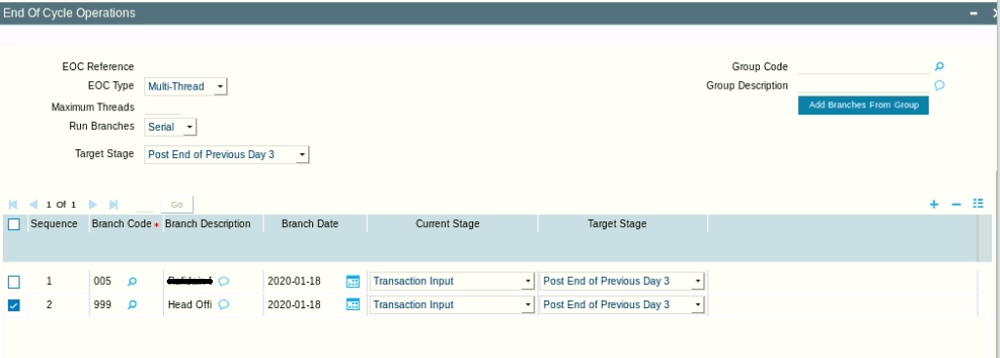
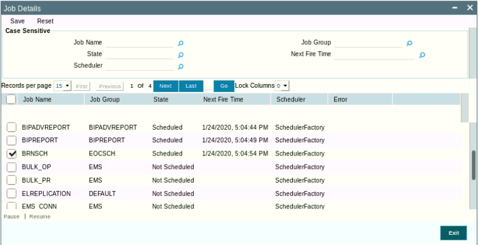
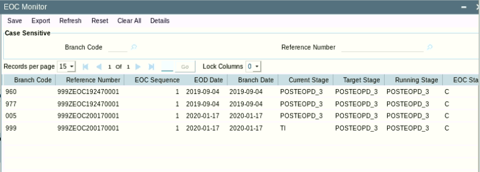

End Of Day

What is End of Day (EOD)?
EOD is set of many batches/functions/processes that runs on a daily basis executed automatically and in specific sequence to tie up all the operations for the current financial day and prepare FLEXCUBE for the next working day as defined in the system calendar.
Each branch can have different set of batches based on the services and products maintained to that branch. For example, if a branch provides loans for customer, then the EOD for this branch should include the CLBATCH responsible for loans while it’s not mandatory to set this batch to another branch that does not provide loans or not allowed to have such service.
Therefore, the EOD execution time could be different form one branch to another; based on the number of batches, customers, transactions…
Before starting the EOD operation, it’s mandatory to take a database backup, in case of any failure during the EOD; the DBA team can restore the backup, fix the problem and restart the EOD processes.
The database backup is also covered in our site.
EOD steps
Using oracle FLEXCUBE, run the pre-check screens to see if there is any pending maintenance, pending transactions, or any open till/vault.
All Transactions and maintenances should be authorized.
All Tills and Vaults should be closed.
Screen STSVWPEN: Pending Maintenances

In STSVWPEN screen, you can base your queries on any or all of the following parameters and fetch records:
Select any or all of the above parameters for a query and click ‘Search’ button. The records meeting the selected criteria are displayed.
System displays the all the pending maintenance pertaining to this branch:
Screen EISVWPNT: Pending Transactions

In EISVWPNT screen, you can base your queries on any or all of the following parameters and fetch records:
Select any or all of the above parameters for a query and click ‘Search’ button. The records meeting the selected criteria are displayed. System displays the following details pertaining to the fetched records
Screen 9012: Current Open Tills. Using head teller

The system defaults the current logged in branch code.
The following details of the current branch are displayed for all the tellers:
After checking all these 3 screens (EISVWPNT, EISVWPNT, and 9012), we should take database backup
After database backup completed, now we can continue the EOD using Oracle FLEXCUBE by running the EODM
Screen EODM: EOD Maintenance screen. To be execute for each branch.

Click ‘Run EOD’ button to run the EOD for the branch.
The following validations are done before running EOD:
Once these have been successfully validated, EOD proceeds with the system date change by moving the Branch posting date to the next date. The Branch transaction sequence will also get reset as a consequence of the execution of Branch EOD. This signifies the Beginning of Day (BOD) for the Branch for the next working day and the Branch is ready for Transaction Input.
screen AEDSTART from the head office.

Use the same options as shown in the above screen.
Note that the job BRNSCH is responsible for the EOD processing. This job should be scheduled.
Use the screen SMSJOBBR, to check the BRNSCH status.

If the job BRNSCH is not scheduled, click on BRNSCH and then click resume.
Now we have to check the status of the EOD
Using screen AESBRMTR: EOC Monitor

EOC Status:
When the EOD compete (status =C) for all branches. We should take another database backup